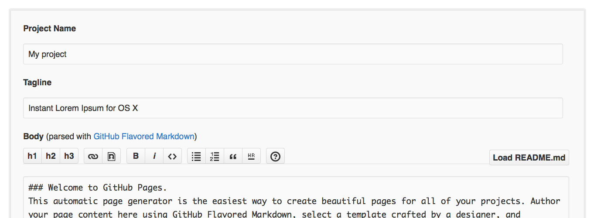

A full featured markdown editor.
Moxile is designed for productivity. With Moxile, you can write aritcle or blog post more effective
Moxile SupportCreate, Edit and Save your markdown files. As well as QuickLook support.
Moxile is available for multipe platforms.
Such as OS X, Windows as well as Linux
-
Create a new file
Press Command + N or choose New menu item under File menu to create a new file.
Open up the Moxile app would create a new file by default. Any text file would open with Moxile to renderered as markdown
-
Full GFM extensions support
-
External editor support
With Moxile, you could write with your favorite editor, such as vim/emacs or sublime. All you need is turn on view mode under the preview menu
-
Beautiful math
with Moxile, high-quality math is available

-
What desktop environment are you using?
-
Clone the repository
Go to the folder where you want to store your project, and clone the new repository:
~$git clone https://github.com/username/username.github.io
-
Hello World
Enter the project folder and add an index.html file:
~$cd username.github.io
~$echo "Hello World" > index.html
-
Push it
Add, commit, and push your changes:
~$git add --all
~$git commit -m "Initial commit"
~$git push -u origin master
-
…and you're done!
Start writting with Moxile or goto http://errpro.com/support for support information and extra theme download

-
Generate a site, or start from scratch?
For Project sites, you have the option to generate a site with one of the amazing pre-built themes, or to create a site from scratch.
-
Repository Settings
Head over to GitHub.com and create a new repository, or go to an existing one. On the right hand side, click on Settings.
For Project pages, the
gh-pagesbranch is used to publish your site. That means that you can work with GitHub Pages in the same repository as the project that it's for, without affecting the project itself. -
Automatic Generator
Scroll down to the GitHub Pages module. Press the Automatic Page Generator button.
-
Add content
Use the editor to add content to your site. If you already have a
README.mdin your project, you can import that on the right hand side.When you're done, click Continue to Layouts.
 -
Pick a theme
Choose between the themes in the carouselle at the top. When you're done, click the Publish button on the right hand side.

-
…and you're done!
Fire up a browser and go to http://username.github.io/repository.